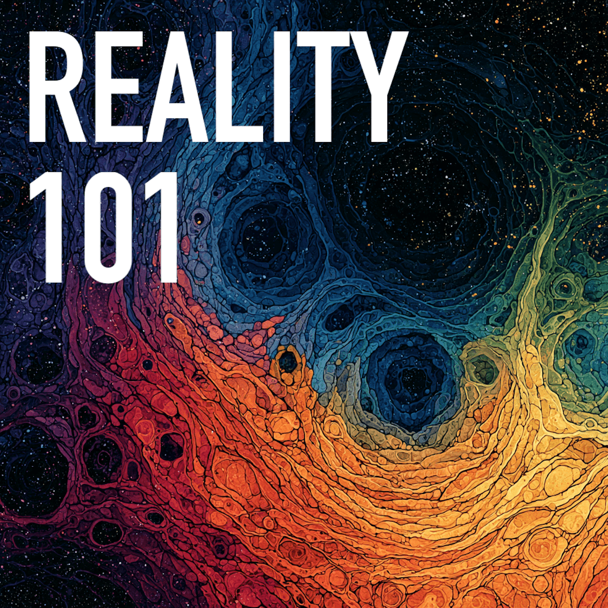

The Steven Schrembeck archive
StevenSchrembeck.
His words. His work.
A place to return to.
For everyone who knew him.
And everyone who has yet to discover him.

Begin anywhere
A mind worth exploring.
It’s Connection
A piece of writing to begin with.
Reverie
Step into an imagined world.
Questions worth following
Technology, meaning, and being human.
The work, through time
Follow the threads across the years.
In his own voice
Spend a little time
with Steven.
Listen to his introduction to Reality 101. The saved recording is right here, with its original source and transcript.
Explore the recordings →
Surprise, you can learn how it all works
1 min 49 secBehind the work
A different way
of seeing.

Steven was a UI developer and Principal Engineer at Cox Automotive. Beyond software, he wrote, made audio fiction, recorded podcasts, and shared explorations on video.
This archive brings those pieces together, so his family, friends, colleagues, and future readers can keep discovering the things he made.
About Steven →Made to be kept
Find a file. Keep a piece.
Download individual works or keep a complete copy. Original sources remain alongside the saved files.